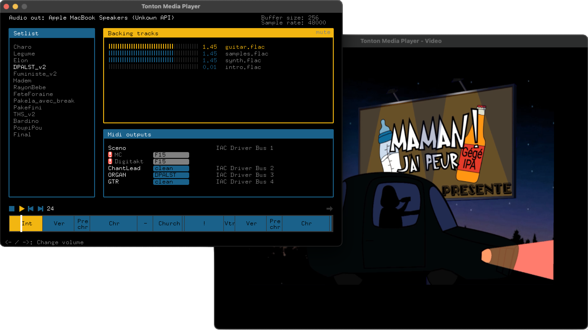

DAWs are powerful for composition but too complex for live. Tonton Media Player goes straight to the point: setlist structure, audio/video/MIDI sync, simple interface that limits mistakes. Coded by and for the band Maman ! J'ai Peur since 2023, we're now making it available to all live musicians who want it.
Want to suggest improvements or follow the development? Contact us at maaamanjaipeuuur@gmail.com.
Backing Tracks
Synchronized multitrack playback
Video Mapping
Project clips live
MIDI Sync
Control your machines
Setlist + Sections
Complete live structure
Your Data
No cloud, no AI
Stable
Built for the stage
Free download
Windows
macOS
Portable .zip archive • No installation • Launch executable directly